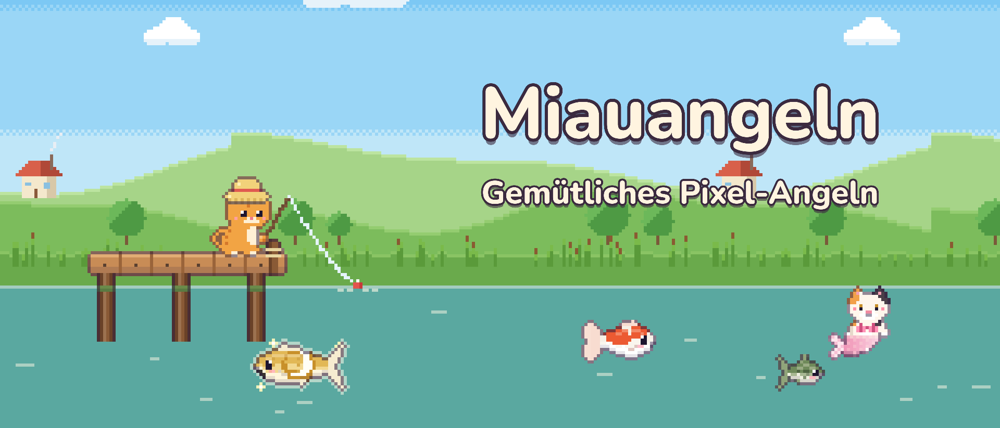
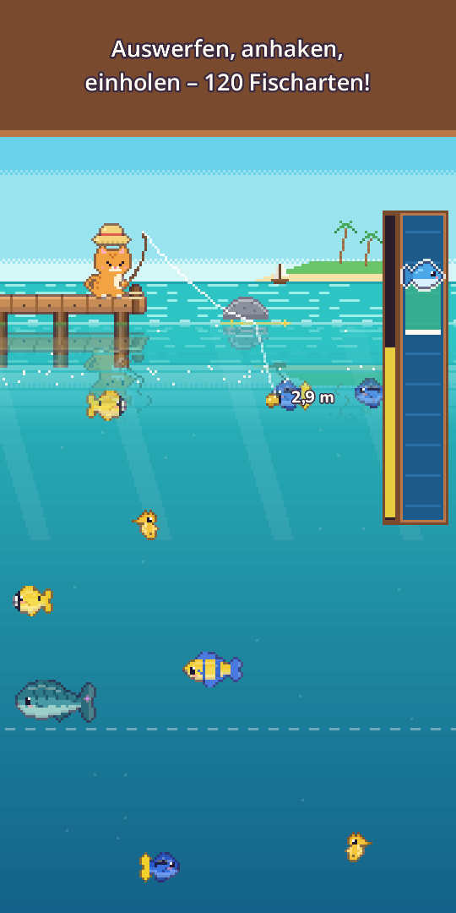
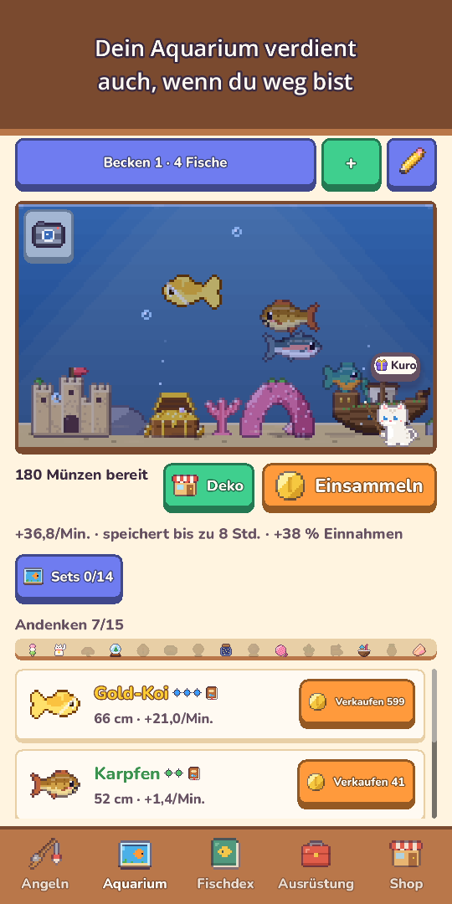
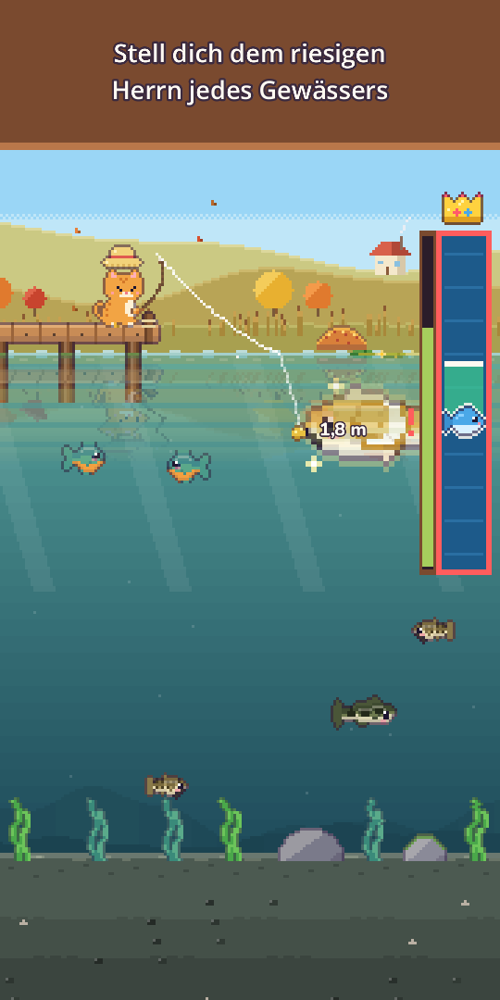
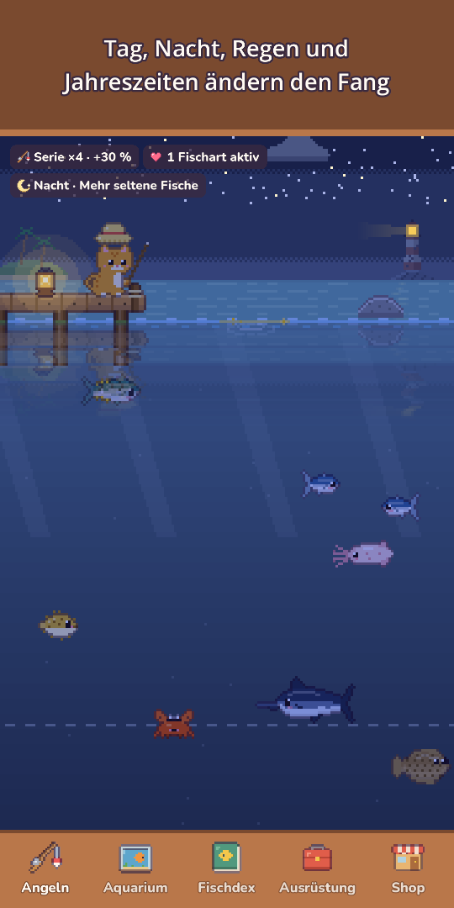
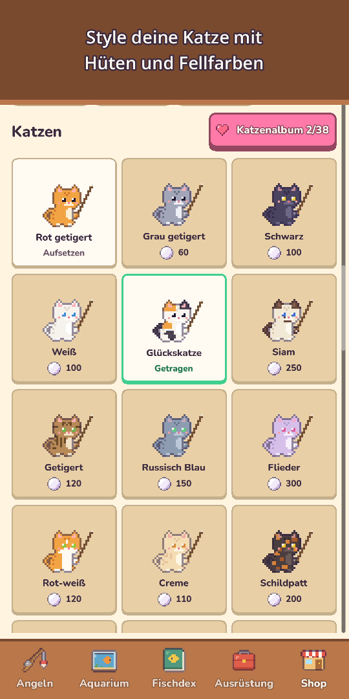
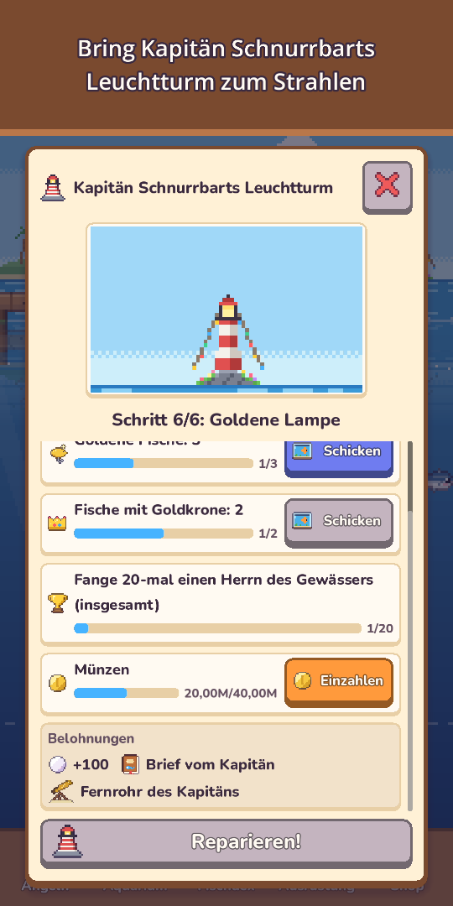
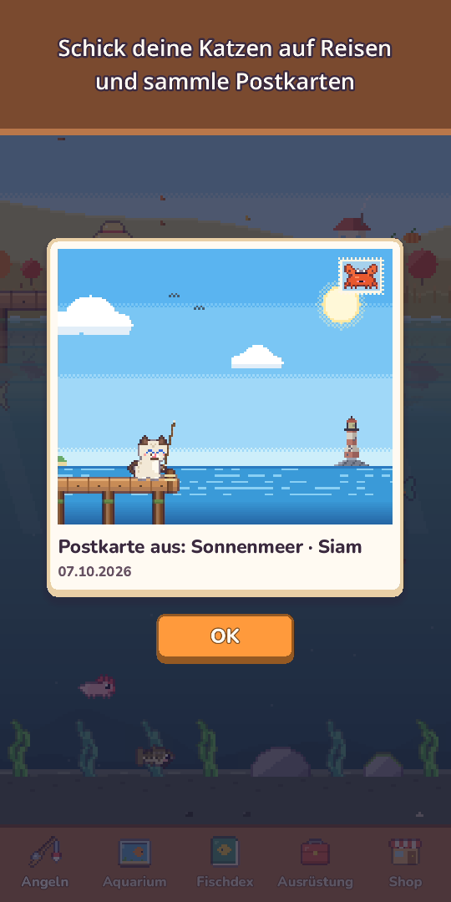

Miauangeln: Pixel-Angeln
Gemütliches Pixel-Angeln
Schnapp dir Angel und Taucheranzug! Fang 120 Arten, tauche ab, fotografiere Meerestiere und triff seltene Katzen-Meerjungfrauen.








Schnapp dir die Rute, kleine Katze – im Wasser warten Überraschungen!
Miauangeln ist ein gemütliches Angelspiel im Pixel-Look, das du mit einem Daumen spielst. Wirf die Angel aus, lenke den Köder zu den Fischen, die du unter Wasser schwimmen siehst, und hol sie mit einem herrlich befriedigenden Fangbalken ein.
- Angeln mit einem Daumenhalten zum Auswerfen, wischen zum Lenken, halten zum Einholen. Tippe, sobald der Schwimmer abtaucht, für einen Vorsprung (optional), dazu Wellenringe, Spritzer, Vibration und Münzen, die in deinen Geldbeutel fliegen
- 120 Arten an 10 AngelplätzenWiesenteich, Bergfluss, Sonnenmeer, Korallenriff, Eissee, Die Tiefsee, der Versunkene Tempel, der Wolkensee, die Vulkaninsel und der Mangrovenwald
- Jage goldene Fische, Schwärme seltener Fische und Legenden wie den Mondkarpfen oder den Sternenwal, und stell dich einmal am Tag dem riesigen Herrn jedes Gewässers
- TauchenZieh den Taucheranzug an, schwimm durch jeden Angelplatz, fotografiere Tiere, die man nicht angeln kann, für dein Fotoalbum und finde mit der Lampe versteckte tiefe Höhlen
- Katzen-MeerjungfrauenAn jedem Platz lebt eine, seltener als jede Legende. Hol sie ins Aquarium oder lass sie frei für einen Glückssegen
- 25 Köder in 5 StufenBessere Köder locken seltenere Fische, Spezialköder rufen Meerjungfrauen und Legenden – und ein starker Fisch kann deine Schnur reißen!
- Ein lebendiger HimmelTag und Nacht folgen deiner Uhr, Regen, Schnee und Regenbögen verändern den Fang, Sternschnuppen schenken Perlen, Jahreszeiten und die echte Mondphase die Landschaft. Jeder Platz zeigt eine 6-Stunden-Vorschau, goldene Glitzerwellen verraten große Fische
- FischdexViele Fische haben eine Lieblingszeit (Nacht, Regen, Morgengrauen oder Jahreszeit), deine größten Fänge bringen Goldkronen, und jeder Erstfang merkt sich seinen Himmel: Uhrzeit, Wetter, Jahreszeit und Ort
- AquariumDeine Fische verdienen Münzen, auch wenn du nicht spielst. Dekoriere mit Schiffswrack, Korallenbogen und mehr, vervollständige Sets für mehr Einnahmen, teile Aquarium-Layouts per kurzem Code und tippe auf einen Fisch, um zu sehen, wo er gefangen wurde und wie viele Tage ihr schon zusammen seid
- Katzenleben & SammelnHüte vom Froschhut bis zur Krone, Fellfarben, Saisonhüte und ein gemütlicher Katzenplatz. Schick eine Familienkatze auf eine 3-stündige Katzenreise für Pixel-Postkarten und lies ihr Katzentagebuch, wenn du zurückkommst
- Nachbarn & FesteNachbarkatzen besuchen dein Aquarium und lassen Andenken da, und Freundschaft bringt neue Sätze, kleine Geschenke und einen Freundschaftshut. Wochenturnier, monatliches Gemeinsam angeln, Gastfisch der Woche und 5 Feste im Jahr (Kirschblüte, Sommer, Halloween, Weihnachten, Neujahr) mit Stempeln für exklusive Deko, die dir für immer bleibt
- Lies die Flaschenpost von Kapitän Schnurrbart, einem alten Leuchtturm-Kater, und hilf ihm, seinen Leuchtturm zu restaurieren
- Wachse in deinem Tempoverbessere Rute, Rolle, Schnur, Köder und Becken, stell aus einem Fang Köder für genau diese Art her (außer Legendären), dazu Tagesaufträge, Tagesgeschenk (ein verpasster Tag kostet keinen Fortschritt) und Geschenke für gemeinsame Tage
- Gemütliche ExtrasDie Landschaftsansicht blendet die Knöpfe aus, damit du einfach zuschauen kannst, das Angeltagebuch hat ein Fotoalbum mit deinen letzten 12 Aquarium- und Katzenplatz-Fotos, und täglich versteckt sich ein kleiner Freund in der Landschaft – finde ihn für Perlen
- Offline spielbar, jederzeit
Kostenlos spielbar, mit optionalen In-App-Käufen: Perlenpakete, Starterpaket und Unterstützer-Paket (Belohnungen ohne Werbung, Kronen-Hut und doppeltes Offline-Limit fürs Aquarium). Alle 120 Fische fängst du auch, ohne Geld auszugeben.
Keine Zwangswerbung, keine Banner. Werbung gibt es nur als freiwillige Belohnung, die du selbst wählst – etwa um einen Fang zum doppelten Preis zu verkaufen.
Entspann dich, wirf die Angel aus und schau, was heute anbeißt!